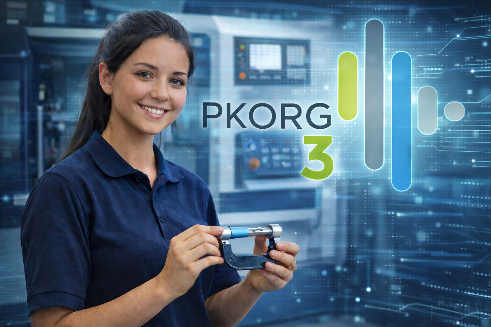
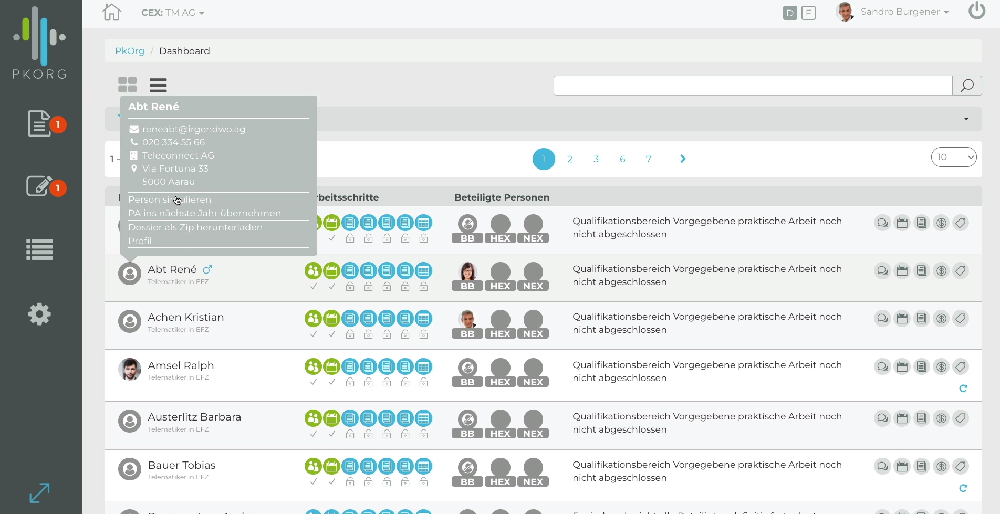
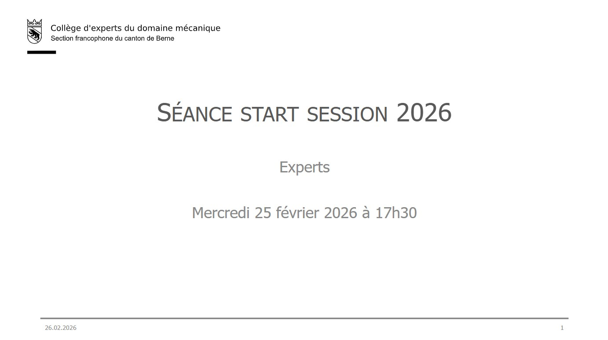
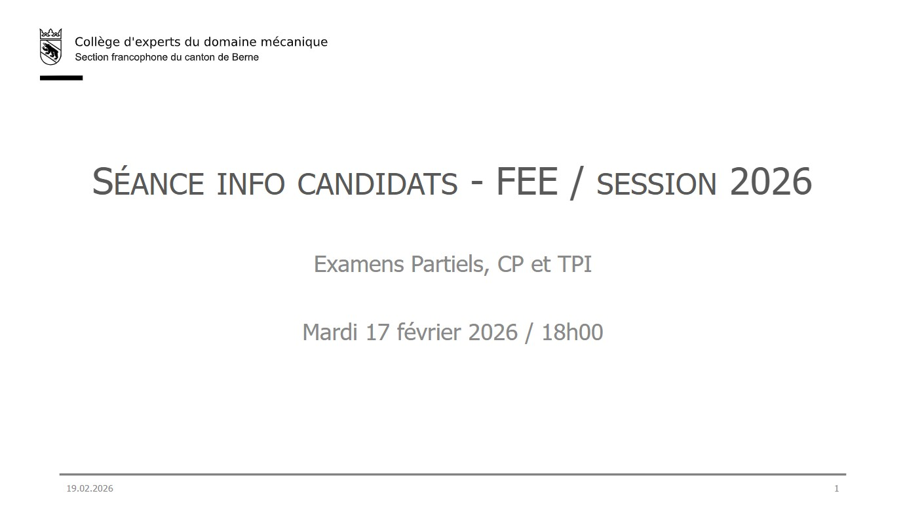
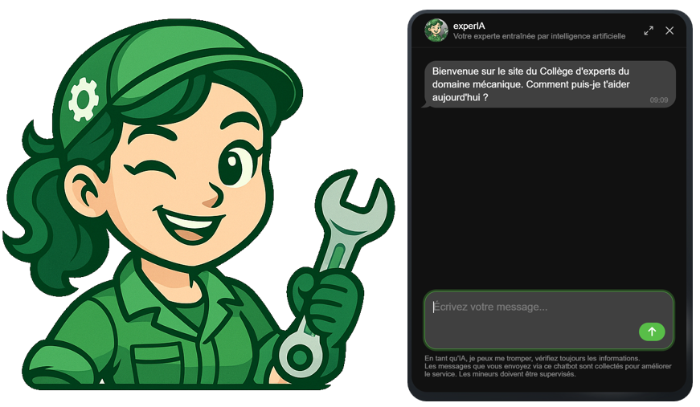
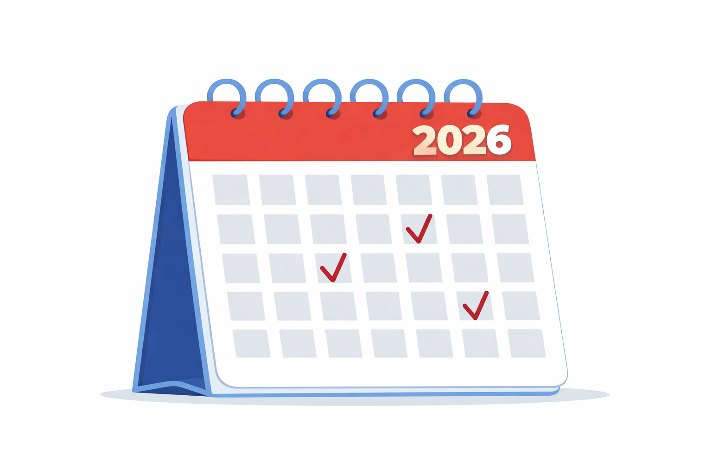
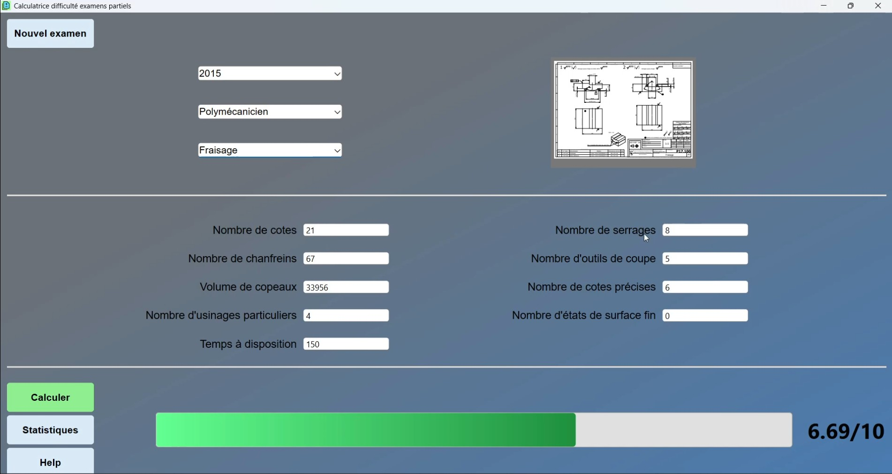
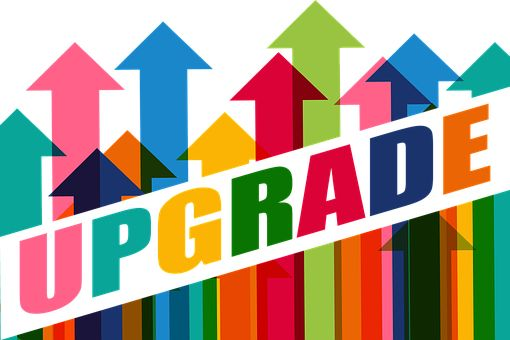
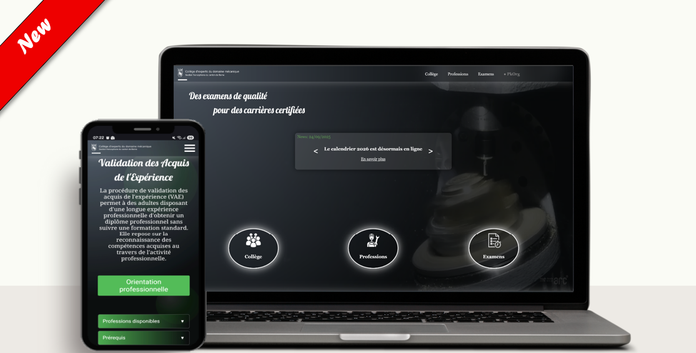

28 avril 2026
FUTUREMEM : réforme des métiers

Les professions techniques de l’industrie MEM (machines, équipements électriques et métaux) évoluent avec l’introduction du projet FUTUREMEM, la plus importante révision de la formation professionnelle initiale de ces dernières années.
Les métiers de polymécanicien/ne, mécanicien/ne de production, praticien/ne en mécanique ainsi que dessinateur/trice-constructeur/trice industriel/le sont directement concernés.
L’objectif de cette réforme est d’adapter la formation aux réalités actuelles des entreprises : numérisation, automatisation, interconnexion des systèmes de production, travail par projets et développement des compétences pratiques.
Dès la prochaine volée d’apprentis, en août 2026, les nouvelles ordonnances de formation entreront en vigueur. La formation sera davantage orientée vers les compétences opérationnelles, avec une meilleure articulation entre l’entreprise formatrice, l’école professionnelle et les cours interentreprises (CIE).
Parmi les principales nouveautés :
• une approche centrée sur les compétences réelles du métier
• des champs d’apprentissage plus modulaires
• une évaluation renforcée par critères de performance
• l’intégration d’outils numériques de suivi et de formation
• une adaptation des procédures de qualification
Cette évolution concerne l’ensemble des acteurs de la formation : entreprises formatrices, écoles professionnelles, formateurs, experts aux examens et futurs apprentis.
Pour en savoir plus sur le projet FUTUREMEM et les changements à venir :
👉 https://futuremem.swiss
15 avril 2026
Suivez-nous sur LinkedIn !
Vous souhaitez rester informé de nos actualités, projets et nouveautés ?
Rejoignez-nous sur LinkedIn et faites partie de notre réseau professionnel.
Nous y partageons régulièrement des informations utiles, des contenus liés aux examens et des actualités du collège.
👉
Suivre notre page LinkedIn
02 mars 2026
Session d'examens 2026 ouverte !
Le Collège d'experts mécanique souhaite adresser tous ses encouragements aux candidat(e)s qui s'apprêtent à débuter leur session d'examens.
Nous vous souhaitons plein succès dans cette étape importante de votre parcours professionnel !
01 mars 2026
PKorg - Plateforme numérique pour les TPI

Nouvelle organisation dès cette année:
Les TPI seront désormais supervisés en nous appuyant sur la plateforme numérique PKorg.
Cette évolution vise à renforcer la qualité du suivi, la transparence des processus et l'efficacité de l'organisation.
Des ressources pour vous accompagner:
Que vous soyez apprenti(e), formateur(trice) ou expert(e), vous trouverez sur la page TPI des tutoriels vidéo dédiés pour vous guider pas à pas dans l'utilisation de la plateforme.
26 février 2026
Séance start session pour experts

La présentation de la séance pour experts "Start session d'examens" du 25 février 2026 peut désormais être téléchargée.
📎Présentation strats session 2026
18 février 2026
Séance information candidats/formateurs en entreprise

La présentation de la séance d'informations candidats/Formateurs en entreprise du 17 février 2026 peut désormais être téléchargée
📎Présentation info candidats 2026
01 décembre 2025
ExperIA

Rencontrez ExperIA, notre nouvelle experte du collège !
Entarînée à partir de nos données, elle répondra à toutes vos questions sur les métiers que nous supervisons.
Disponible sur notre page d'accueil
24 novembre 2025
Calendrier 2026

Le calendrier 2026 est disponible !
Disponible sur notre page calendrier annuel
17 novembre 2025
Calculateur difficulté d'examens partiels

Nous avons le plaisir de vous présenter notre nouveau calculateur de difficulté pour les examens partiels, développé par nos soins.
Cet outil nous permettra d'analyser et d'ajuster la difficulté de nos examens partiels, afin de garantir une évaluation juste et équilibrée pour chaque année.
🎬 Voir la vidéo calculateur examen partiel
15 novembre 2025
Cours spécifique pour experts

Nous sommes heureux d'annoncer que nos 90 experts ont participé au cours N°2 spécifique pour experts, coorganisé avec la HEFP, durant les mois de septembre et octobre.
Ces formations ont permis de renforcer nos compétences et d'approfondir notre compréhension du rôle d'expert. Nous nous réjouissons de pouvoir mettre à profit ces nouveaux acquis dès la prochaine session d'examens.
Un grand merci à l'ensemble des experts pour leur engagement et le temps consacré à cette démarche de perfectionnement !
10 novembre 2025
Nouveau site web

Nous sommes heureux de vous présenter notre nouveau site web du collège d'experts mécanique Berne francophone.